Onze diensten
Kwaliteit is onze fundering,
betrouwbaarheid ons
motto
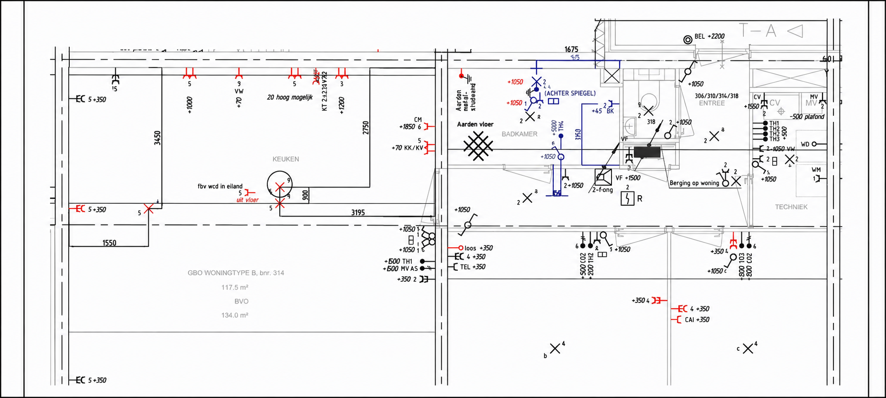
Renovatie & Nieuwbouw
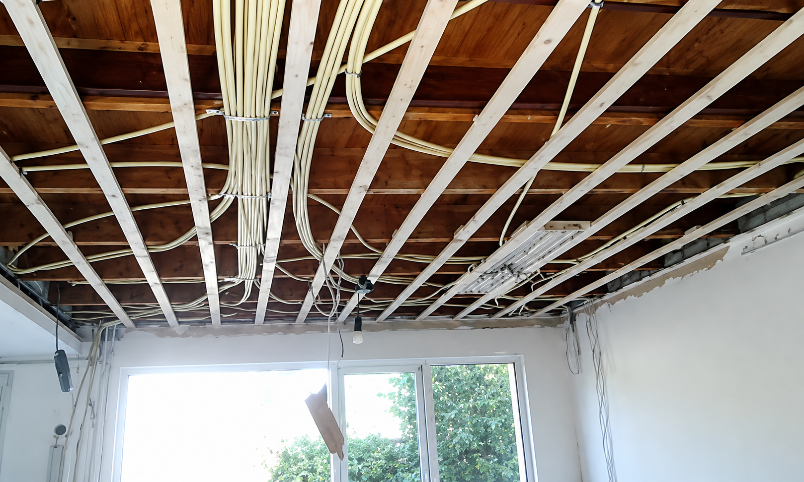
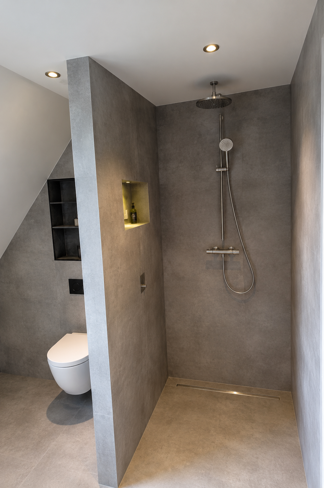
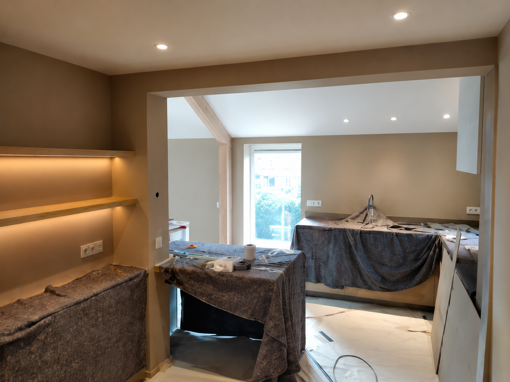
Of het nu gaat om een kleine aanpassing of een volledig nieuwe installatie, bij JDV Elektrotechniek denken we graag met u mee om uw wensen te realiseren.
Telecom: Datanetwerk, Intercom, Camerabewaking
JDV Elektrotechniek heeft Comelit als voorkeursmerk bij het aanpassen of vernieuwen van deurintercom en camerabewakingssystemen. Door de ervaring met Comelit kunnen we een kwalitatief goed systeem leveren wat helemaal van deze tijd is.
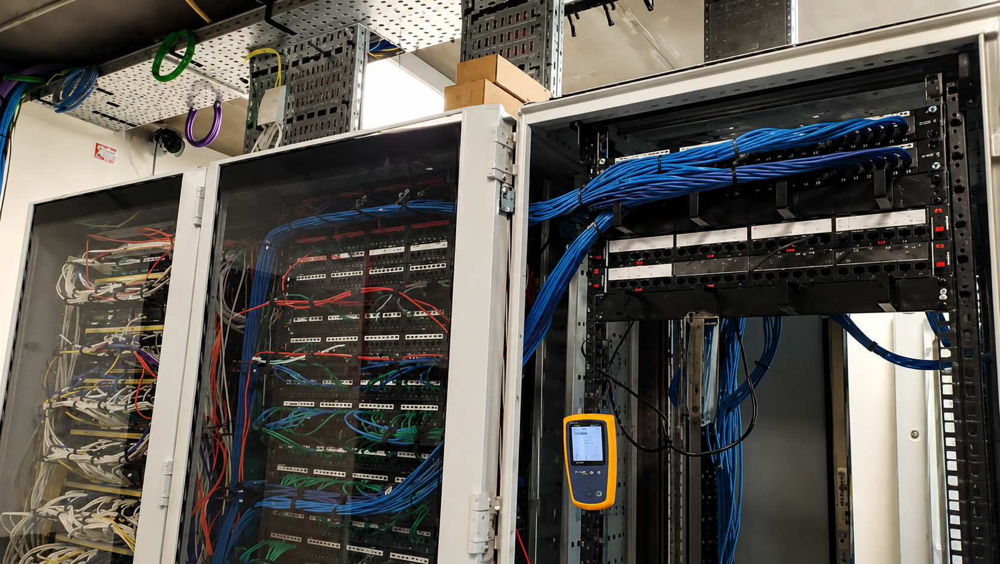
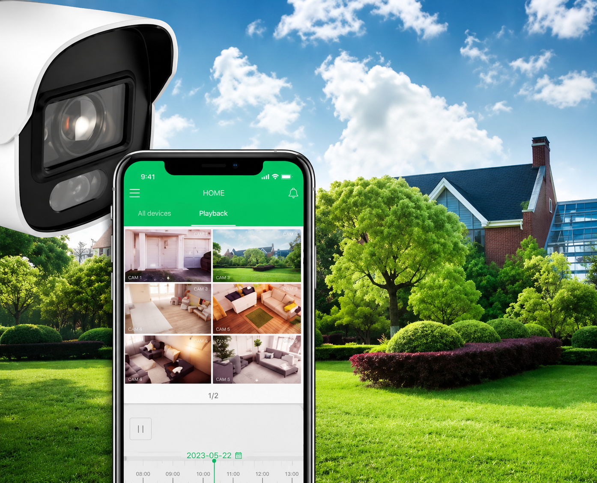
Duurzaamheid: Laadpalen
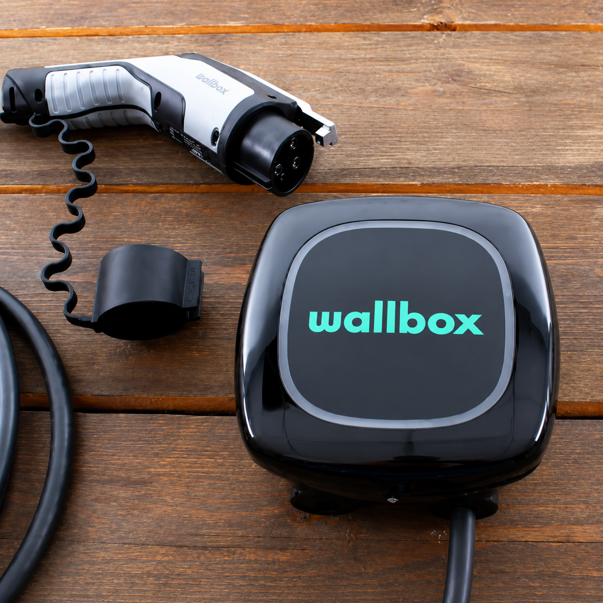
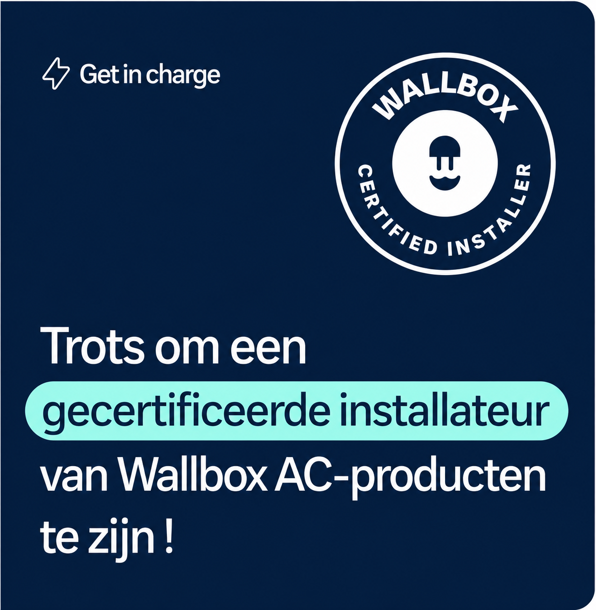
Laadpaal nodig? JDV Elektrotechniek is een gecertificeerd Wallbox-installateur. We werken met de beste producten van Wallbox.Door de ervaring en het goede contact met Wallbox bieden wij een snelle en kwalitatieve oplossing voor een betrouwbaar laadsysteem.
Groepenkasten: Vervangen & Uitbreiden
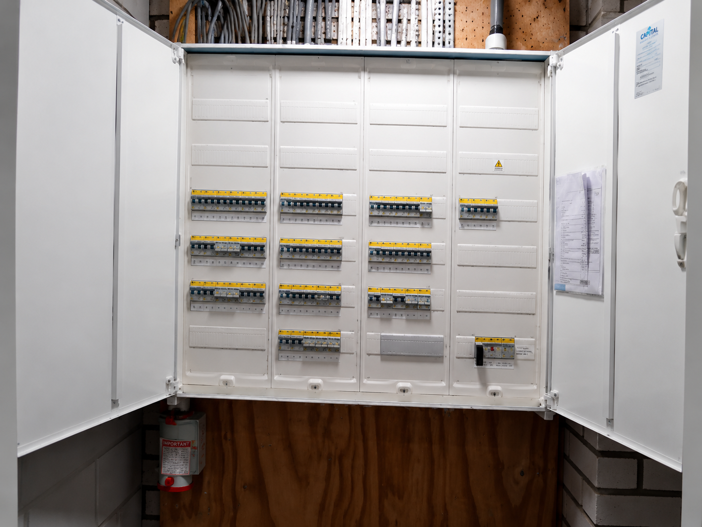
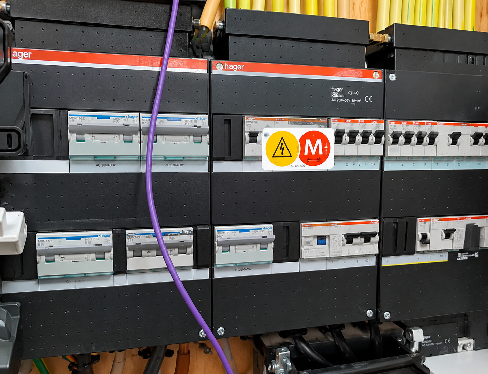
De groepenkast is een cruciaal onderdeel van uw installatie. Een verouderde groepenkast voldoet meestal niet meer aan de huidige veiligheidsnormen. Wij vervangen of passen uw groepenkast aan, zodat u verzekerd bent van een goed functionerende en veilige installatie.
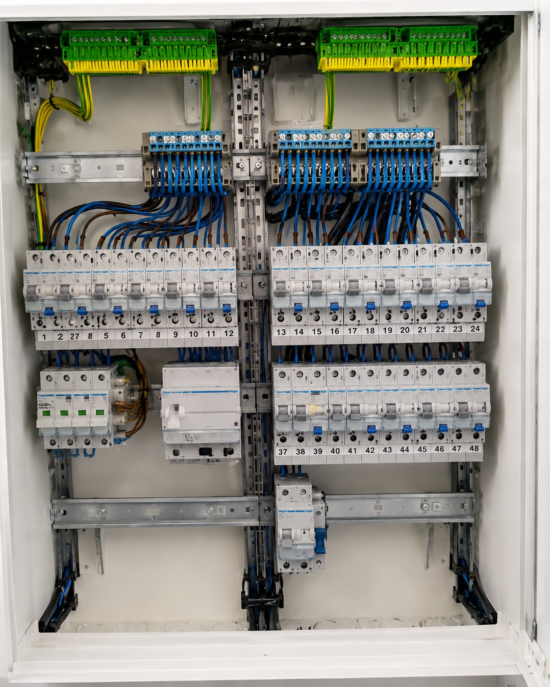
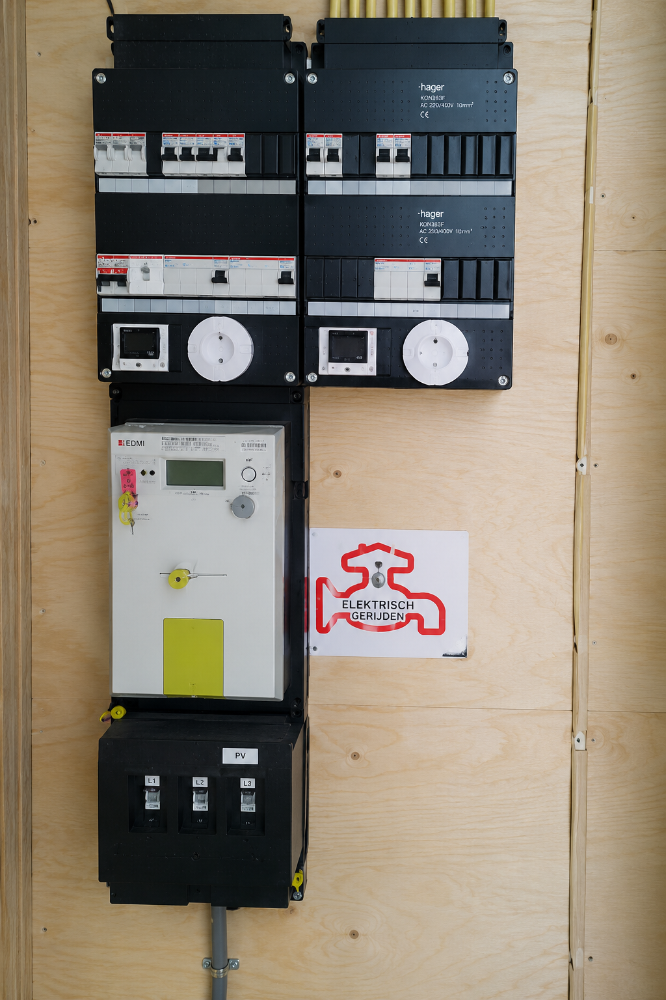
Op zoek naar een betrouwbare elektrotechnisch specialist?
Neem gerust contact met ons op. We denken graag met u mee.
Neem direct contact op